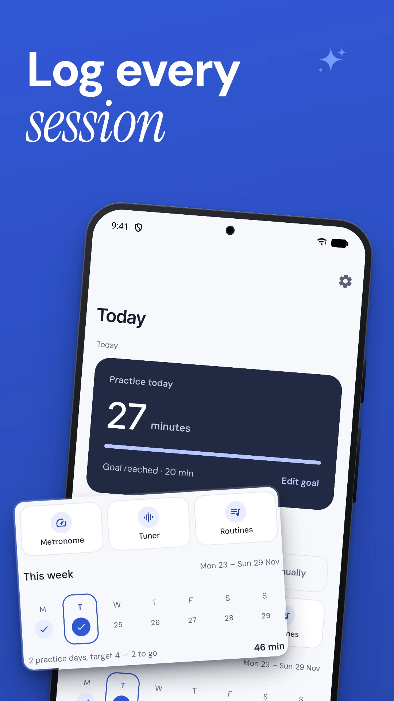
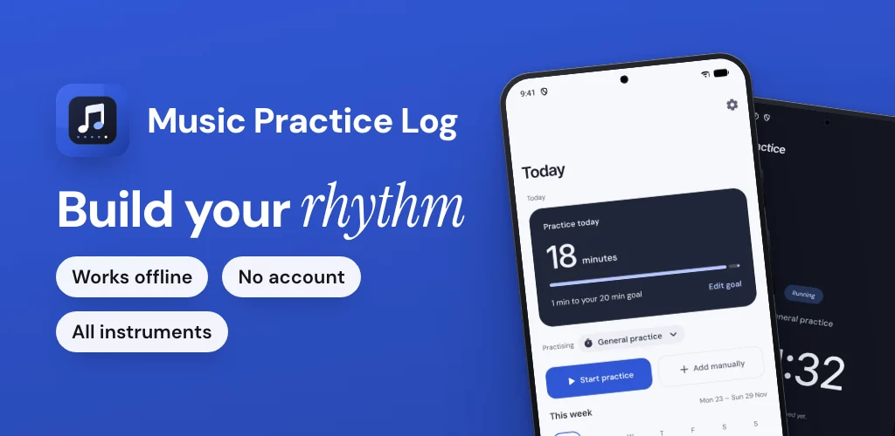
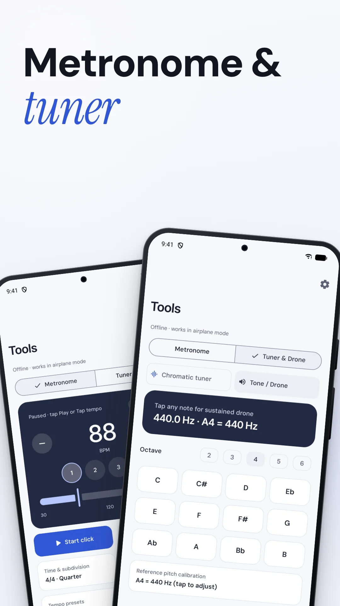
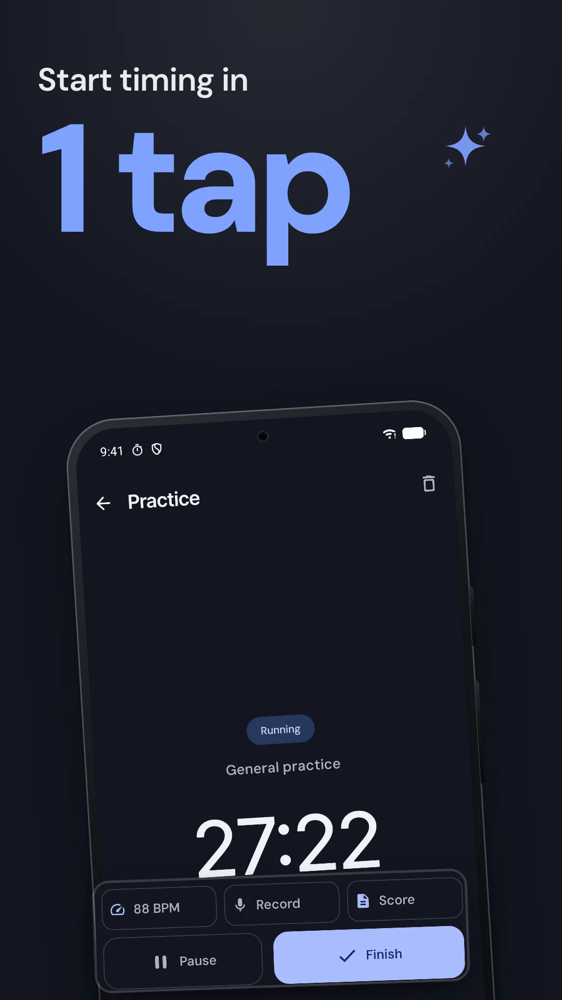
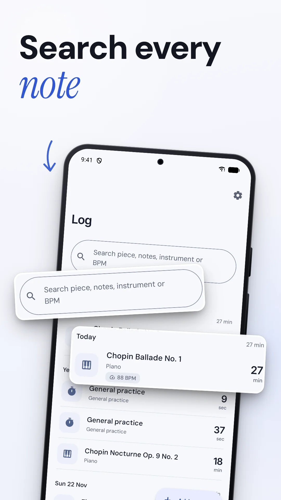
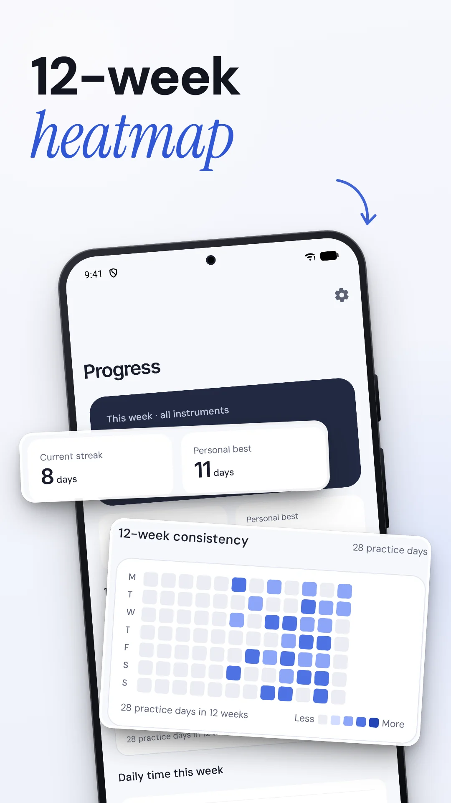
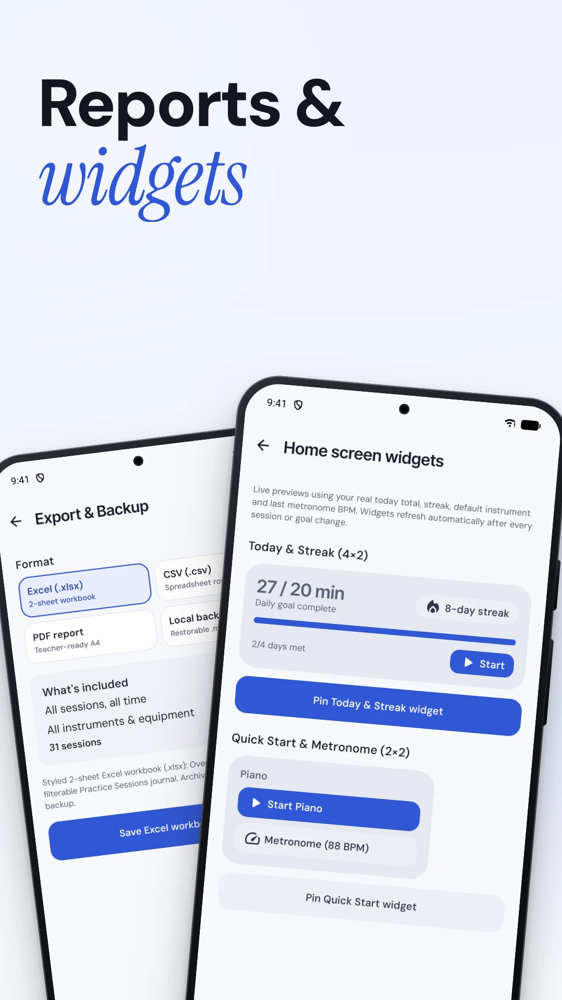
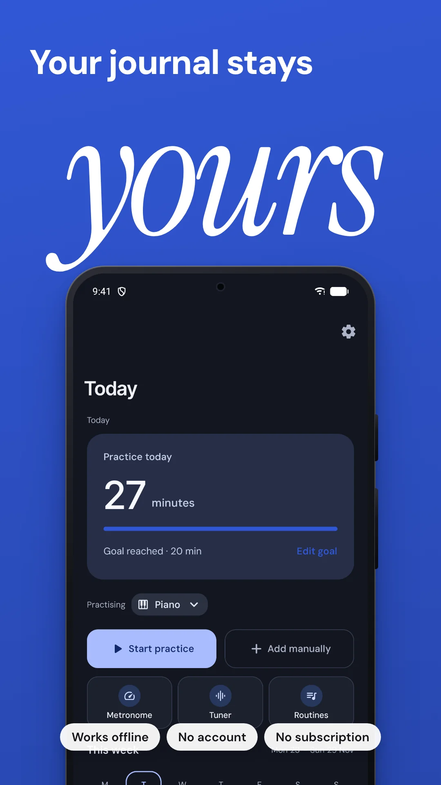

Music Practice Log
A private practice tracker for any instrument or voice — with a crash-safe stopwatch, precision metronome, chromatic tuner, 12-note drone, local audio takes, step-by-step routines and offline PDF sheet music, all kept on your phone with no account.

About Music Practice Log
Music Practice Log brings everything musicians use during daily practice into one calm, 100% offline Android app: a crash-safe practice stopwatch, built-in PCM metronome (30–240 BPM with subdivisions, tap tempo and presets), chromatic tuner (415–466 Hz with B♭/E♭/F transposition), 12-note harmonic drone, in-session audio takes, reusable step-by-step routines and an offline PDF sheet music reader.
Your core toolkit is free and unlimited: logging, stopwatch, metronome, tuner, drone, audio recording, routines, PDF viewer, instant search, 12-week consistency heatmap, local reminders, home screen widgets, daily/weekly goals and streaks. An optional one-time lifetime Pro upgrade (no subscription) unlocks detailed By Piece insights, Audio A–B Loop & pitch-preserving slow-down (0.5×–1.5×), PDF score pen/highlighter annotation, Excel/CSV/PDF teacher reports, restorable .mplbackup archives, and removes all ads forever. During the launch offer, Pro features are unlocked for everyone.

Your sessions, recordings and PDFs are stored only on your device: no account, no cloud sync and zero permissions on launch. Read the privacy policy for details.
Why use Music Practice Log?
Metronome, tuner & crash-safe timer
Practice with a built-in PCM metronome (30–240 BPM), chromatic tuner (415–466 Hz), 12-note drone, local audio takes and a foreground stopwatch that survives restarts.
Routines, PDF scores & 12-week heatmap
Build reusable step-by-step practice routines, import and annotate offline PDF sheet music, and follow streaks, smart reminders, home screen widgets and your 12-week consistency heatmap.
Excel, CSV, PDF reports & .mplbackup
Export styled Excel workbooks, CSV archives, printable A4 teacher PDF reports with signature lines, or restorable offline .mplbackup archives saved only where you choose.
App Screenshots






Technical Details
Built to open straight to today's practice and to work fully offline for logging, the timer, goals and streaks.
Your practice journal is stored only on your device. Ads and Pro purchases use the internet. See the privacy policy.
| Category | Music & Audio |
| Current Version | 2.0.0 |
| Requires | Android 8.0 or higher |
| Package ID | app.novushq.musicpracticelog |
| Privacy | Privacy Policy |